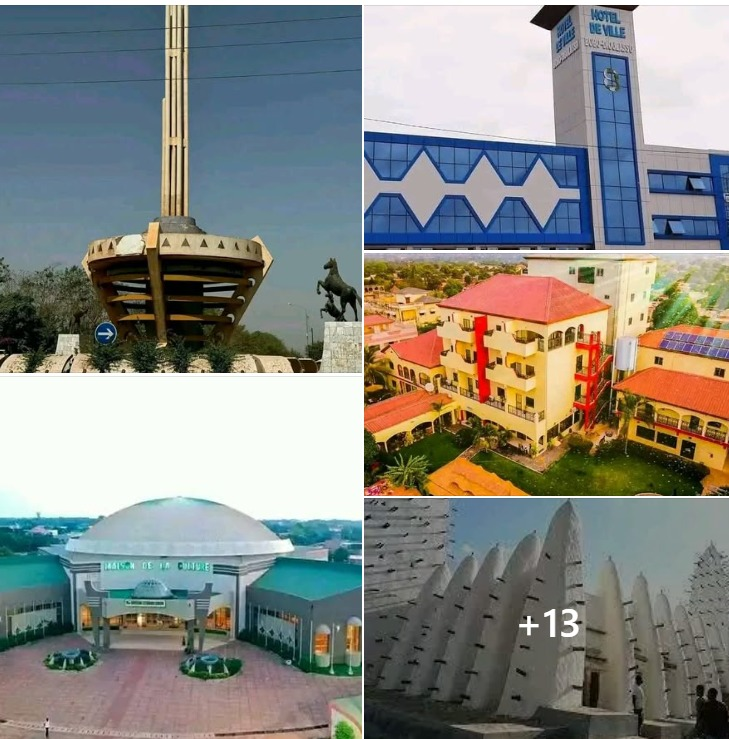
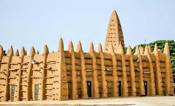
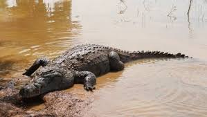
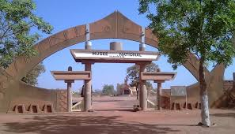
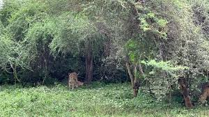
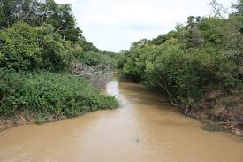
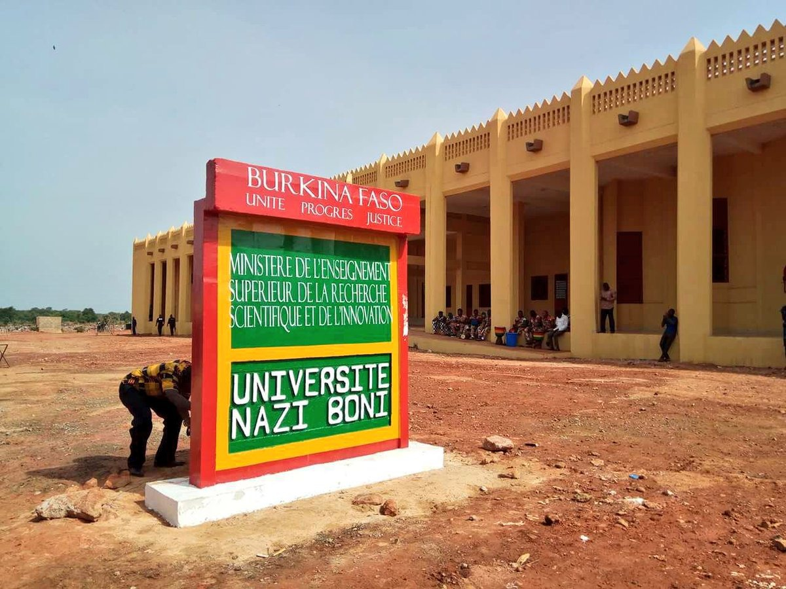

Vue aérienne emblématique de la capitale culturelle
« Là où le fleuve rencontre la culture »
Pays : Burkina Faso
Statut : Région
Provinces : 3
Départements : 33
Chef-lieu : Bobo-Dioulasso
Gouverneur : Mariama Konaté/Gnanou
Population (2024) : 2 572 600 hab.
Densité : 102 hab./km²
Coordonnées : 11°15'N, 4°30'O
Superficie : 25 344 km²
Présentation
À l’ouest du Burkina Faso, au carrefour de plusieurs civilisations, s’étend une région dont le nom résonne encore dans la mémoire collective : Guiriko. Héritage d’un ancien royaume fondé au XVIIIe siècle par les Marka, ce territoire fut autrefois une puissance économique, politique et culturelle. Sa capitale, Sya, est aujourd’hui connue sous le nom de Bobo-Dioulasso, deuxième plus grande ville du pays et capitale culturelle par excellence.
Pendant plusieurs décennies, le royaume de Guiriko a joué un rôle clé dans le commerce régional, reliant les forêts du Sud aux marchés du Sahel. Or, sel, coton, bétail, mais aussi savoirs et traditions y circulaient. Si l’histoire du royaume n’est plus enseignée avec l’intensité qu’elle mérite, ses traces sont encore bien vivantes dans les récits oraux, les pratiques sociales et les sites historiques que la région conserve jalousement
La région de Guiriko est un véritable vivier culturel. Elle rassemble une diversité ethnique rare Bobo, Dioula, Marka, Bwaba, Peuls, Sénoufo qui continue de faire vivre des traditions ancestrales. Les musiques rituelles, les danses masquées et les fêtes coutumières témoignent d’un attachement profond à l’identité locale. Le balafon, joué lors des cérémonies de réjouissance ou d’initiation, incarne cet héritage vivant ; il est d’ailleurs reconnu par l’UNESCO comme patrimoine culturel immatériel de l’humanité

Ville de Bobo-Dioulasso
Bobo-Dioulasso, l’une des plus grandes villes du Burkina Faso Avec 1,129,000 habitants 2023, la ville de Bobo-Dioulasso est la deuxième plus grande ville du Burkina Faso. Cette ville qui se trouve dans la province de Houet (région des Hauts-Bassins). Une province qui se trouve dans le sud-ouest du pays. Bobo-Dioulasso se trouve donc à un carrefour de l’Afrique de l’Ouest. Cette grande ville du Burkina Faso se trouve à mi-chemin sur la ligne de chemin de fer qui relit Abidjan (Côte d’Ivoire) à Ouagadougou (Burkina Faso). L’activité de la ville tourne principalement autour de l’industrie. L’industrie agro-alimentaire, l’industrie chimique ou métallurgie sont autant de piliers qui ont largement contribué au développement de l’une des plus grandes villes du Burkina Faso.

À Bobo-Dioulasso, la culture est omniprésente. La ville abrite des structures culturelles majeures comme la Maison de la Culture, le Centre Siraba, ou encore de nombreux studios et ateliers d’artistes. Chaque année, des événements artistiques d’envergure s’y tiennent, attirant créateurs, chercheurs et touristes. Outre son patrimoine immatériel, Guiriko offre une diversité de sites touristiques à forte valeur symbolique. La vieille mosquée de Dioulassoba, avec son architecture soudano-sahélienne, fascine par sa simplicité majestueuse. Le vieux quartier de Sya, avec ses ruelles étroites, ses autels sacrés et ses familles anciennes, transporte le visiteur dans une autre époque et le musée Sogossira. D’autres espaces naturels, comme la forêt classée de Kou ou la mare aux hippopotames de Bala, située dans la province du Houet, permettent de découvrir une nature préservée tout en s’ouvrant à un tourisme écologique de proximité

Pour accueillir les visiteurs, la région dispose d’une offre hôtelière en développement. À Bobo-Dioulasso, on trouve des établissements modernes ainsi que des maisons d’hôtes traditionnelles. La gastronomie locale — riz gras, tô à la sauce gombo, poisson braisé, brochettes et dolo — participe à l’accueil chaleureux des visiteurs.

Malgré ce potentiel, Guiriko reste encore trop en marge des grands circuits touristiques. Le manque d’infrastructures routières, la faible promotion institutionnelle et la qualité inégale des services touristiques freinent l’émergence d’une filière touristique structurée.
Tourisme & Culture



Ressources naturelles


Potentiel agricole 🌾
Potentiel éducatif 🏫

Potentiel commercial 🛒
Le potentiel commercial de la région (Hauts-Bassins / espace historique du Guiriko) repose sur un écosystème agro-industriel puissant et une position de carrefour historique. Sous l'impulsion des réformes de la Transition et l'action de la Délégation Consulaire Régionale de la CCI-BF, la zone se positionne désormais comme le principal hub logistique et industriel reliant les États de l'espace AES (Burkina, Mali, Niger).
Artisanat traditionnel
Carte de situation
Provinces